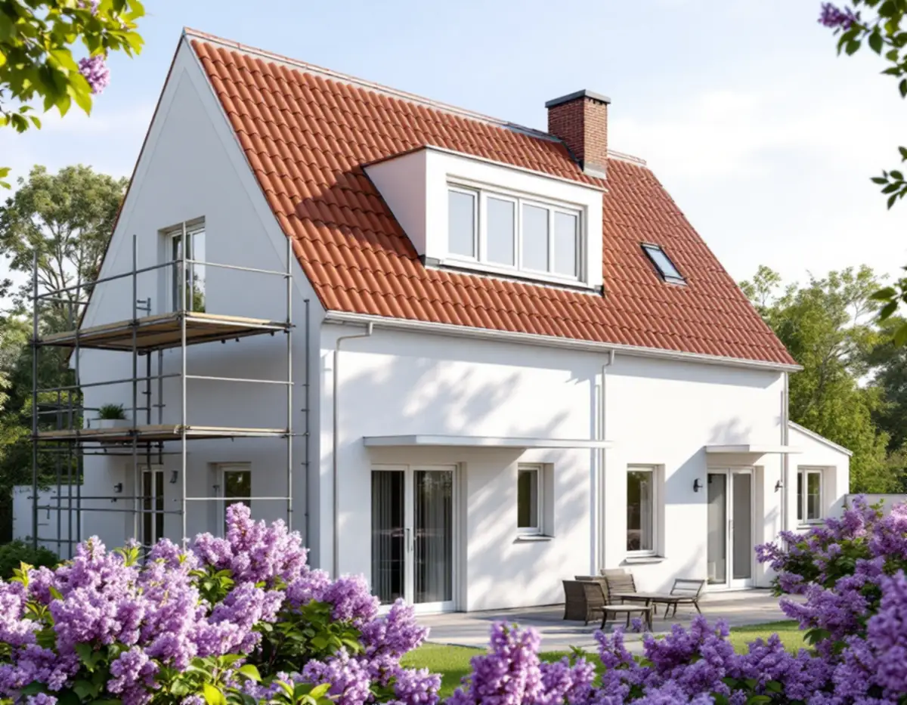
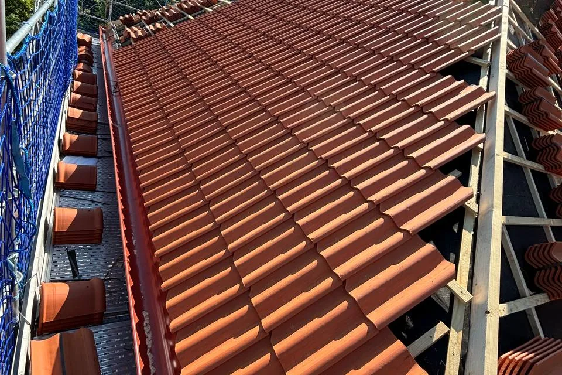
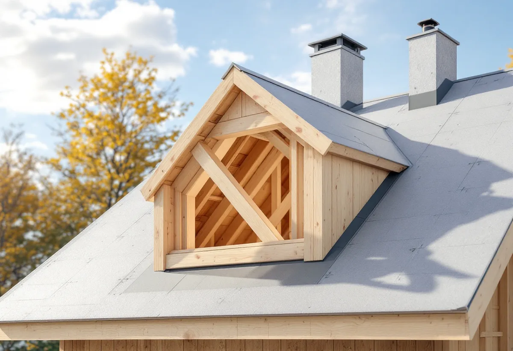

Platsbesök
Tak, takstolar, material och planer på solpaneler eller takkupa.
Ett takbyte är sällan bara nya pannor. Ofta byts materialet, solpaneler kommer till eller en takkupa ska byggas medan taket ändå är öppet. Botkyrka kommun beskriver noga när sådana ändringar blir en lovfråga. Geal Entreprenad AB byter tak i hela Botkyrka och går igenom det med dig innan arbetet börjar.

Plan- och bygglagen definierar fasadändring som att en byggnad byter kulör, fasadbeklädnad eller taktäckningsmaterial eller att dess yttre karaktärsdrag påverkas på annat sätt. Botkyrka kommun förklarar att ett materialbyte innebär att det befintliga materialet byts ut mot ett annat, till exempel från tegel till putsad fasad, och att även installation av tak- eller fasadintegrerade solpaneler i vissa fall kan bedömas som fasadändring. Anläggningar för solenergi, antenner och aggregat för ventilation, kyla och värme kan också räknas som fasadändring när de monteras, flyttas eller ändras på tak.
Inom detaljplan krävs bygglov för en fasadändring om tre saker gäller samtidigt: att det är en fasadändring, att den görs på en annan byggnad än ett en- eller tvåbostadshus, en komplementbyggnad eller ett komplementbostadshus och att ändringen sker på en fasad eller ett tak som vetter mot allmän plats. För en villa är ett nytt takmaterial därför normalt lovfritt.

Om en ändring påverkar husets yttre karaktärsdrag på annat sätt behöver det bedömas utifrån den enskilda byggnaden, skriver kommunen. Karaktärsdragen kan vara storlek, färg, utvändiga materialval, byggnadsstil, ålder, detaljer och proportioner. Ett tak som går från rött tegel till svart plåt ändrar både färg och material på en stor del av huset.
Den utökade lovplikten gäller alla typer av lovfria fasadändringar, inom och utanför detaljplan. Det betyder att en annars lovfri ändring kräver bygglov om den görs på en särskilt värdefull byggnad eller inom en tomt, allmän plats eller ett bebyggelseområde som har skyddsbestämmelser eller är särskilt värdefullt. Kommunen hänvisar till lagren Kulturmiljöprogram, Detaljplaner och Riksintressen i webbkartan, och till översiktsplanen och eventuella gestaltningsprogram.
För solenergi finns en särskild regel. En lovfri fasadändring kräver bygglov om den innebär att en solenergianläggning sätts upp eller väsentligt ändras inom detaljplanelagt område och inom eller i anslutning till områden som är av riksintresse för totalförsvarets anläggningar. Kommunens webbkarta har lagren Totalförsvaret och MSB, Försvarsmaktens civila del, under fliken Riksintressen.
Planerar du solpaneler på det nya taket kontrollerar vi därför båda lagren först. Krävs bygglov söker vi det innan taket läggs, så att fästen och genomföringar kan monteras i rätt läge. Om takvatten, rännor och plåt i kommunen kan du läsa under plåtslagare i Botkyrka.
Ett tak består enligt kommunen av en bärande konstruktion, takstolen, och ett skyddande ytskikt. En takkupa ingriper i båda. Kommunen skriver att du måste söka bygglov om du vill bygga större eller flera takkupor på ditt en- eller tvåbostadshus, och påpekar att en ny takkupa kan påverka husets byggnadshöjd. Börjar du bygga innan du har gjort anmälan eller sökt bygglov och fått startbesked kan det bli sanktionsavgifter.
Kommunen anger också att sidan om takkupor kan vara inaktuell efter lagändringen den 1 december 2025. Vi kontrollerar därför vad som gäller för just din kupa innan den ritas. Om husens tak och epoker i Botkyrka kan du läsa under takrenovering i Botkyrka, och om våra tjänster i stort under takläggare i Botkyrka.

Tak, takstolar, material och planer på solpaneler eller takkupa.
Kulturmiljö, detaljplan och totalförsvarets lager för fastigheten.
Rivning, underlag, ytskikt, plåt och eventuella tillägg.
Bygglov eller anmälan när solpaneler, kupa eller kulturvärden kräver det.
Gammalt tak rivs, underlaget ses över och nytt tak läggs.
Vi går igenom taket, plåten och genomföringarna med dig.
Skatteverket räknar byte och reparation av takpannor och hängrännor på ett småhus som rotarbete, och även att byta plåttak och stuprör och att montera och montera ner byggnadsställningar. Är bostaden yngre än fem år får arbetet bara återställa det ursprungliga skicket.
Avdraget är högst 30 procent av arbetskostnaden, högst 50 000 kronor per person och år och högst 75 000 kronor tillsammans med rutavdrag. Material och resor ger inget avdrag. Geal drar avdraget direkt på fakturan.
Takets yta och lutning, materialet, hur mycket råspont och läkt som behöver bytas, plåtdetaljer och om takkupor eller fästen för solpaneler ska byggas samtidigt. Läs mer i vad kostar ett takbyte. Efter ett gratis platsbesök får du ett skriftligt kostnadsförslag.
Byte av tegel-, betong- och plåttak.
Takbyte →Takbyte, takbesiktning och plåtarbeten.
Takläggare i Botkyrka →Tullinge, Uttran och Tumba.
Takrenovering i Botkyrka →Kartlagren, checklistan och vattnet.
Attefallshus i Botkyrka →Flytt av badrum, stammar och frånluft.
Badrumsrenovering i Botkyrka →Nytt hus, utfart och byggarbetsplats.
Byggföretag i Botkyrka →Tullinges villor och kulörbytet.
Fasadmålning i Botkyrka →Tegel, trä och puts från efterkrigstiden.
Fasadrenovering i Botkyrka →Fönstertyper per epok i Botkyrkas villor.
Fönsterbyte i Botkyrka →Radhusen i Tuna.
Fönsterrenovering i Botkyrka →Kataloghus, källargolv och trägolv.
Golvläggare i Botkyrka →Furugolv och parkett i villorna.
Golvslipning i Botkyrka →Kök i villor och radhus, för att bo kvar.
Köksrenovering i Botkyrka →Tidstypiska kulörer från 1960-tal till gamla byar.
Målare i Botkyrka →Rännor, stuprör och plåttak i Botkyrka.
Plåtslagare i Botkyrka →Altan, plank och förråd i villaområdena vid järnvägen.
Snickare i Botkyrka →Ny tapet på träfiberskivor och gamla lager.
Tapetsering i Botkyrka →Villorna i Tullinge, Uttran och kartan.
Tillbyggnad i Botkyrka →Tullingehuset i omgångar.
Totalrenovering i Botkyrka →